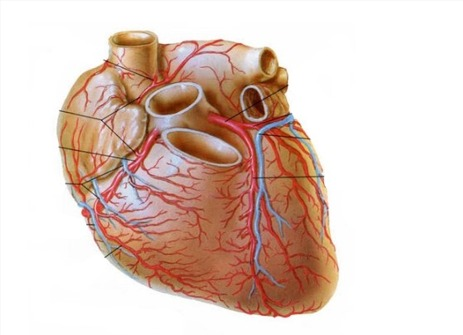
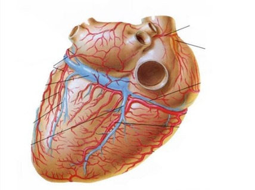
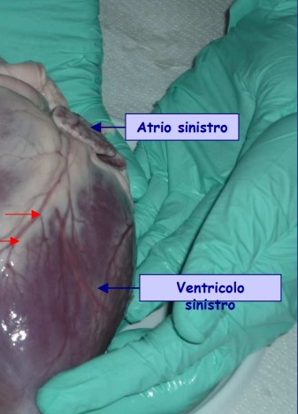
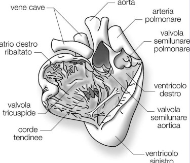

Esploriamo atri, ventricoli, valvole e setto interventricolare
Il cuore: organo muscolare cavo
Il cuore è diviso in due lati: destro e sinistro, ciascuno composto da atrio e ventricolo. Funziona come una pompa che muove il sangue attraverso due circuiti principali: polmonare e sistemico. La dissezione ci permette di osservare direttamente queste strutture, collegando teoria e pratica.
 
Lato destro
L'atrio destro riceve sangue deossigenato dalle vene cave superiore e inferiore, che passa poi nel ventricolo destro attraverso la valvola tricuspide. Il ventricolo destro pompa il sangue verso i polmoni tramite l'arteria polmonare. Il tessuto muscolare del lato destro è più sottile rispetto al sinistro, adatto alla pressione minore necessaria per la circolazione polmonare.
Lato sinistro
L'atrio sinistro riceve sangue ossigenato dai polmoni tramite le vene polmonari. Il sangue passa nel ventricolo sinistro attraverso la valvola bicuspide (mitrale) e viene pompato in tutto il corpo tramite l'aorta. La parete del ventricolo sinistro è molto più spessa, necessaria per generare la pressione elevata del circuito sistemico.

Valvole e setto interventricolare
Le valvole atrioventricolari (tricuspide e bicuspide) impediscono il reflusso del sangue dagli atri ai ventricoli. Le valvole semilunari (aortica e polmonare) assicurano il flusso unidirezionale verso le arterie principali. Il setto interventricolare separa ventricolo destro e sinistro, garantendo efficienza e sicurezza della pompa cardiaca.

Approfondimento
Ci ha colpito che il ventricolo sinistro fosse così spesso rispetto al destro, mostrando l’efficienza della pompa sistemica. Questa dissezione permette di confrontare cuore di suino e cuore umano, evidenziando similitudini anatomiche fondamentali per lo studio della fisiologia cardiovascolare.